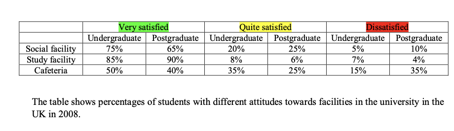

Article
Read the article, then confirm below to continue.
The art of small improvements
Rather than making ambitious New Year's resolutions, try embracing the concept of kaizen, says David Robson.
📄 Open articleComprehension & vocab
Questions on the article you just read, plus ten key words from it.
Comprehension
1. According to the article, why do ambitious New Year's resolutions often fail?
2. According to the article, what does the Japanese concept of kaizen mean?
3. According to the article, what does Schaffner argue about kaizen's emphasis on gradual change?
4. According to the article, what have people with a "strategic mindset" been found to do?
5. According to the article, what did the author discover when he tested himself on his Spanish learning progress?
6. According to the article, what example of applying kaizen to working patterns does Schaffner suggest?
Vocabulary
Writing Task 1: the article
Background reading on campus facility satisfaction — study the highlighted language before you write.
■ subject synonyms ■ useful Task 1 chunks
Campus Experience and Infrastructure Assessment: Evaluating Student Satisfaction Across Higher Education Facilities
Institutional quality assurance surveys provide vital insights into how well university infrastructure supports diverse student cohorts. Evaluating approval ratings for key campus amenities — specifically academic study spaces, social gathering areas, and dining services — reveals how satisfaction levels vary between undergraduate and postgraduate populations.
1. Satisfaction Trends Across Key Campus Amenities
Student feedback demonstrates clear differences depending on the primary function of each facility.
Academic Study Spaces Receive Highest Approval: Facilities dedicated to learning, such as libraries and study hubs, enjoy overwhelmingly positive feedback across the board. Both undergraduate (85%) and postgraduate (90%) cohorts report top-tier satisfaction, resulting in exceptionally low rates of dissatisfaction (4%–7%).
Positive Perception of Social Spaces: Infrastructure designed for student recreation and community engagement yields strong overall approval. A solid majority of undergraduates (75%) and postgraduates (65%) express high satisfaction, though postgraduates show slightly higher neutral or moderate satisfaction rates (25%) compared to their undergraduate peers (20%).
Dining Services Face Greater Criticism: On-campus cafeterias and dining halls record the lowest top-tier satisfaction ratings across all surveyed areas. Only half of undergraduates (50%) and 40% of postgraduates report high satisfaction. Moreover, dissatisfaction rates peak significantly in this category, particularly among postgraduate students (35%).
2. Institutional Satisfaction Metrics by Student Level
| Facility Category | Undergraduate Satisfaction Profile | Postgraduate Satisfaction Profile | Comparative Perception Analysis |
|---|---|---|---|
| Academic Study Hubs | 85% Very Satisfied 8% Quite Satisfied 7% Dissatisfied |
90% Very Satisfied 6% Quite Satisfied 4% Dissatisfied |
Universally lauded; academic infrastructure meets high standards for both research and coursework. |
| Social & Recreational Facilities | 75% Very Satisfied 20% Quite Satisfied 5% Dissatisfied |
65% Very Satisfied 25% Quite Satisfied 10% Dissatisfied |
Highly rated overall; undergraduates demonstrate stronger enthusiasm for leisure amenities than postgraduates. |
| Campus Dining & Cafeterias | 50% Very Satisfied 35% Quite Satisfied 15% Dissatisfied |
40% Very Satisfied 25% Quite Satisfied 35% Dissatisfied |
Primary operational friction point; postgraduates express more than double the dissatisfaction of undergraduates. |
Task 1 report
Mini exam block — write your response with the stopwatch running.
The table shows percentages of students with different attitudes towards facilities in the university in the UK in 2008. Summarise the information by selecting and reporting the main features, and make comparisons where relevant. Write at least 150 words.

Sample answer
Model response, with useful comparison language marked.
The table compares the percentages of undergraduate and postgraduate students in the UK who expressed different levels of satisfaction with three university facilities — social facilities, study facilities, and cafeterias — in 2008.
Overall, study facilities received the highest satisfaction ratings among both student groups, while cafeterias recorded the greatest dissatisfaction, particularly among postgraduates. Undergraduates reported slightly higher satisfaction than postgraduates in social and cafeteria facilities.
Regarding social facilities, 75% of undergraduates reported being very satisfied, compared with 65% of postgraduates. A further 20% of undergraduates and 25% of postgraduates were quite satisfied, while dissatisfaction was relatively low in both groups, at 5% and 10%, respectively.
The proportion of postgraduate students who were very satisfied reached 90%, slightly higher than the 85% recorded among undergraduates. Meanwhile, only small minorities expressed dissatisfaction, accounting for 7% of undergraduates and just 4% of postgraduates.
Among undergraduates, 50% were very satisfied, and 35% were quite satisfied, while 15% expressed dissatisfaction. Postgraduates reported poorer experiences, with only 40% very satisfied and 35% dissatisfied — the highest dissatisfaction figure recorded among all facilities.
Reading Practice
Open the test in a new tab, complete it, then come back here.
Speaking Part 2 & 3
Choose a topic set below. You only get one attempt per question, so make sure you're ready before you start recording.
Video & comprehension
Watch, then answer the questions below.
1. According to the video, approximately how much of the food produced globally is wasted every year?
2. How much food does an average household of four people in the UK waste each year?
3. If food waste were a country, what position would it have among greenhouse gas emitters?
4. Where does the majority of food waste in the UK occur?
5. Which type of food is wasted the most in people's homes?
6. What does a “best before” date mainly tell consumers?
7. Which of the following should NOT be stored in the fridge, according to the video?
8. Why can poorer countries experience high levels of food waste?
9. What is one possible benefit of bioactive packaging?
10. What is the main message of the video?
Gap Fill
Word box: inevitable · wallets · culprits · leftovers · consuming · freezer · fermentation · preserve · undernourished · shelf life · scepticism · dysfunctional · precious · biodiversity · resource
1. Because of busy lives, throwing away old food can sometimes seem .
2. Reducing food waste would benefit both the planet and our .
3. Many people assume that supermarkets are the main responsible for food waste.
4. Planning meals can help people use up their instead of throwing them away.
5. A “best before” date means that consumers can use their senses to decide whether what they are is still OK.
6. Leftover food can be stored in the and used on another day.
7. is an ancient technique that can be used to transform and preserve certain foods.
8. Pickling helps food by stopping bacteria that cause it to spoil from growing.
9. In India, millions of people are , meaning they do not get enough food to stay healthy.
10. Bioactive packaging may increase the of food.
11. Some new food technologies face consumer because people may be worried about how natural the food is.
12. Tim Benton describes the current global food system as highly .
13. Food should be treated as a resource rather than something that can easily be thrown away.
14. Reducing food waste could help save more around the world.
15. Food is an important that should be respected and used carefully.
Vocabulary Matching
Day 29 complete! 🎉
All 8 tasks done. Come back tomorrow for the next day.